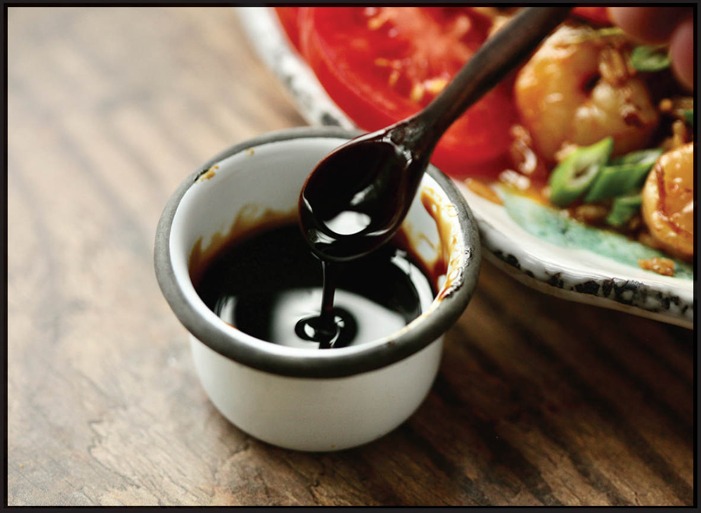

HOMEMADE KECAP MANIS
|
Yield Makes about 1 ½ cups |
Active Time 30 minutes Total Time 30 minutes |
INGREDIENTS
1 cup (240 ml) dark soy sauce
1 cup (about 8 ounces/225 g) packed dark brown sugar
2 tablespoons (30 ml) molasses
2 medium garlic cloves (5 g), smashed
Two ¼-inch-thick slices fresh ginger
1 cinnamon stick
1 whole star anise pod
1 teaspoon (3 g) black peppercorns
2 cloves
Kecap manis is Indonesian soy sauce made by combining fermented soybeans with palm sugar, giving it a thick, syrupy consistency and salty-sweet flavor that is similar to Chinese tianmianjiang, and indeed, the latter thinned out with a touch of water is a reasonable replacement for it in a pinch. The main difference is that kecap manis is very frequently flavored with a slew of warm spices that balance out the salty funk of the fermented soybeans. If you have trouble finding kecap manis or simply don’t want to keep a whole bottle, you can make it yourself from pantry ingredients by infusing soy sauce with aromatics and sweetening it with brown sugar (or, if you can get your hands on it, palm sugar). The process takes about 15 minutes.
DIRECTIONS
Combine all the ingredients in a small saucepan. Bring to a bare simmer over medium heat, stirring frequently to avoid burning. Cook until very slightly reduced and thickened and all of the sugar is dissolved, about 15 minutes. Let cool to room temperature, then strain through a fine-mesh strainer. Store in a sealed container in the refrigerator for at least a few months or even years.
